Induction is Monday, so this deck has to match the headcount CSV sitting beside it: one slide per department after the title slide, largest headcount first, each titled with the department and a body line reading exactly "Headcount: N". Save it in place and drop a PDF copy beside it.
{
"config": [
{
"type": "execute",
"parameters": {
"command": "mkdir -p '/home/user/hr' && printf %s 'RGVwYXJ0bWVudCxIZWFkY291bnQNCldhcmVob3VzZSw0OA0KQ3VzdG9tZXIgQ2FyZSwyMw0KRmluYW5jZSw5DQpGaWVsZCBFbmdpbmVlcmluZywzMQ0KUGVvcGxlIFRlYW0sNg0K' | base64 -d > '/home/user/hr/headcount.csv' && printf %s 'UEsDBBQAAAgAANi0Cl1exjIMJwAAACcAAAAIAAAAbWltZXR5cGVhcHBsaWNhdGlvbi92bmQub2FzaXMub3BlbmRvY3VtZW50LnRleHRQSwMEFAAACAAA2LQKXQAAAAAAAAAAAAAAABoAAABDb25maWd1cmF0aW9uczIvdG9vbHBhbmVsL1BLAwQUAAAIAADYtApdAAAAAAAAAAAAAAAAHAAAAENvbmZpZ3VyYXRpb25zMi9wcm9ncmVzc2Jhci9QSwMEFAAACAAA2LQKXQAAAAAAAAAAAAAAABoAAABDb25maWd1cmF0aW9uczIvc3RhdHVzYmFyL1BLAwQUAAAIAADYtApdAAAAAAAAAAAAAAAAGAAAAENvbmZpZ3VyYXRpb25zMi90b29sYmFyL1BLAwQUAAAIAADYtApdAAAAAAAAAAAAAAAAGAAAAENvbmZpZ3VyYXRpb25zMi9mbG9hdGVyL1BLAwQUAAAIAADYtApdAAAAAAAAAAAAAAAAGgAAAENvbmZpZ3VyYXRpb25zMi9wb3B1cG1lbnUvUEsDBBQAAAgAANi0Cl0AAAAAAAAAAAAAAAAYAAAAQ29uZmlndXJhdGlvbnMyL21lbnViYXIvUEsDBBQACAgIANi0Cl0AAAAAAAAAAAAAAAAMAAAAbWFuaWZlc3QucmRmzZPNboMwEITvPIVlzthALwUFcijKuWqfwDWGWAUv8poS3r6Ok1ZRpKrqn9TjrkYz3460m+1hHMiLsqjBVDRjKSXKSGi16Ss6uy65pds62ti2Kx+aHfFqg6WfKrp3bio5X5aFLTcMbM+zoih4mvM8T7wiwdU4cUgMxrSOCAkejUJp9eR8GjnO4glmV1F066CQefcgPYvdOqmgsgphtlK9h7YgkYFAjQlMyoR0gxy6TkvFM5bzUTnBoe3ix2C904OiPGDwK47P2N6IDKblXuC9sO5cg998lWh67mN6ddPF8d8jlGCcMu5P6rs7ef/n/i7P/xnir7R2RGxAzqNn+pDntPIfVUevUEsHCLT3aNIFAQAAgwMAAFBLAwQUAAgICADYtApdAAAAAAAAAAAAAAAACAAAAG1ldGEueG1sjZIxb4MwEIX3/grkZgUHiNLEAiJ16BSpSyt1ixz7Am7BRrYJ+fkFB2hKM3Tj3n3nu/dEsrtUpXcGbYSSKQqDJfJAMsWFzFP0/vbib9Aue0jU6SQYEK5YU4G0fgWWet2oNCTXnJcpKqytCcZt2wZtHCid42i5jHGOObXUPwtoH9Ew0Q+nqNGSKGqEIZJWYIhlRNUgxxXkhyXurGvN2bSqbnTpFnGGoYR+yOAwCPHIXkohv+5dFm63W+y6I6qUmsD+iqvf0cYKX+uJdtV/LQzZORPD903gMcrGdHuvWeIcT0EbS60wVjDP6ZYeS/CZaqRNUfeeE0VF8z+iOn4Cs3O1viHDSdM017Qu5o1WaT5q8aCxoqOZBT02opGWSvptISyYmrJuyRwMtwgP7nKQoKlVOtuLo4ZXZx8/BXHwFESLvZDN5fCxWR/WK+8GONRa9Z5wvFw8N6LkfpTg2XsJ/pUlvvffZt9QSwcIjKjOxGQBAAD1AgAAUEsDBBQACAgIANi0Cl0AAAAAAAAAAAAAAAAMAAAAc2V0dGluZ3MueG1svVpLcxo5EL7vr3Bxd7A32Twom9QAJiYBQwGOa/cmZhpGi1BPSRpj/v22NEAcGxziofcE8+pWv79u6eLzw0Kd3IOxEvVl5fzNWeUEdIyJ1LPLyu24ffqx8rn+xwVOpzKGWoJxvgDtTi04R6/YE/pc21qMeirpg9zoGgorbU2LBdiai2uYgd58Vnv8di0wK+48KKnnl5XUuaxWrS6XyzfLt2/QzKrnnz59qoanm1cRcfuip12sLLz859nZu2pxvX07XB26sLWUYWHr/49U87ZS3+hhI379Yi1L8XMqHSy8bk7Wtz2zywotuXYvYbnVWmXXdz9/853ejwyIMWaVzRO3yuiJQj2r1M8uqs9JHE62C1PHQfdOJi7lIHwNcpYedcmjFJdDSMi3oJkKPQP7hPoEUYHQlbozObyOR0c3DC4t9DCBfdSnQtk95Hfc9D50uNcVN3IjHPnw77jfwEjtBgZtBvFTrR+y8oPoD8FHFyRc9EckrIKvONlr2bIcfBgNBIvrBPpjMVFsxJuonUHFRd7rpSHi+cxgrvfauCSTlhHL4NI85BuKBGiTntg8KNIaXQjPHTnCpmjcqxNc4UHw4AYkBaSoEjAsYqCjJNGWoBIeNQX6DcT5Qpg5B4urReZWrUkQ4VomYAfCiOO7VEtaH8/96dTHxgCt9HYn92UQaZRPnBFkFrWykY7JkSCJwhWPibIu1dFRJmISZ5SS581tWxrr/O3jazLKMrXyRpoZkaU9cos2moVwY7zJFxMwPDr9kjsHJnLPMdkxqI8J5axLVhNVviDoAGIe2ZBH/V8Wx59AMlpZesCV5QKLJi4yBQ+j2MjMvcjp9T4RGEVWCs3PpksZ+39g09dqdUsAics2HgFInWNur3RCdWg/1CjrAGwSKJllkAxk7HLDsvy2QuGcz9s3SPVnJjUHl1s98SEe2GwyGAefaxCEAtZ5ugEKl11h3UvlrgSzSBH9gEIIgzeFjkEdP1AoPvoqCVzA9MAZGXMojpB4n7qVXvAAHvp2CIryyj2MsaMT0Hv7rrLK4qyRHU1aIrBmfrgZF3QeiAxM2+BiBC7nqMi3WSIceA5joPpF/49vkWZuDJm6JSjFCEuVf7EQOhkT+Se8SOBXdwIEwuaFMPubjPNXxniS+OyxNvUYQ8faBMXRVrYN/US5w6WfMt1Jl/YI1jIlr92Geao7F8KoeqDHgvGB7eeORLkrVpg/jfE1wXoqZ+kpFTQCgr5HKIGSKeSNF4KpQ26Lhxu6erVenqjZ/44wN3EJigQJIttMhW9/CK6vm587Q68aaoCCF3GUiI79BkYHBDrINQGS0NZz9HaCakRKSVwLyVNRfTcFxs8O7qjByniSOKWOqweyiRaqS7DkBSYlGsUiPYWs9Ity9HomI7dSYG+wBVORK45xqfdm5zNfkcWZYpkq9q5KSmH5/l1DamFWh8TfDpVHbuRIgOMve2jl05Qc6uT52V8fPpx9LNGwJJBsclKp/BZmSpyW6+fOb2F04R7U32EGxwnv2ojON4odXcwoxujHE1cc891IyZkmLxo5zDazMgb8takTfkRBBddv9u1AX0eYxIIp5Ug+6X9ROBGqtd609KiObS4Nhh9eb+rMo9EhT5nx+egRE16UuhWrP/kXYsc75g22+uKHoC+0vSUqG6Ezv3uzQQKjhVB7EUe5QRRl8h+Io69JeaQ5BlY9e0fNqY/2sSH45McgSvAEEnlZFLYIi3aevGI7srYd3ZWWb2fVb5YzbUyuJyF8AduZaQLs292DQnkdzVnW1ucA1ltNFK3fYFUSBrXwBt3X3Do5XXkxbOhXhc6F4prm/7RpPxx3uViE7TIm7wpqG4KFMJSMnDOW4oZs7yfIPNUhNIT96ZR4srSFwZ39fC/SSZFrSCLvEk2h4lxxdYldFMmQ+irU6pkvH4F8MFRTZH7u7nfhKWHbvvZewWOl72CcjIVittatfiDrxPAPGKTu9BeNaalpQVdMYAvmeMqPgiEuvwFwwDffew2pHTh6/xVyzLWkFkx7PMB4ZIFgGivC6Ent47w4u9ZYtVkC8ccZG58xfWn+1aGYkqOn78WRyL5uKrQc0d4TLm1QufUlOXSBLwVICXDrwSxlMDsACnjtKHW9f88CbpUiLhDKpm86eE6XrHHZVOHy94nvPWlYfXbitbrvLHD9P1BLBwh9HymmWAYAAE0sAABQSwMEFAAACAAA2LQKXUYmeuA2BAAANgQAABgAAABUaHVtYm5haWxzL3RodW1ibmFpbC5wbmeJUE5HDQoaCgAAAA1JSERSAAABagAAAgAIAwAAAJyB1nAAAABRUExURT4+PkNDQ0xMTFVVVVtbW2RkZG1tbXNzc3t7e4SEhIqKipKSkpycnKKioqurq7Ozs7m5ucTExMvLy9PT09zc3OLi4u3t7fPz8/7+/gAAAP///3iptNcAAAOgSURBVHja7dTNjpswFIDRyTTBP0AIYLDf/0nrZCp1Wqmjrrrp+SQkX7irI+Ct6R/1hgA1aqFGLdSoUQs1aqFGjVqoUQs1atRCjVqoUaMWatRCjRq1UKMWatRCjfo/pp6P9fw03lNp689x/WV3ieOPrePzwkT6r6ivYy572pYO2ac91XO75HPLj/aY59cx7W2Z76/loZ5TOmu+HUtfX1OZL3O7z117rMv4QP1lQ8779XGN25b7VId4tNjasVxr2M5+rP1hex4/qEtY57yHElqoQztb6HdD26Z1up0D6q+pt8t+3fY5ho8X94gt1m57q6nzxlpv2/688yrUYyxTPPMR2nCkF/PzWpaS4+uM+s+FdiljGvcQSp/OMCxtjueYvp25+/bfRU5TSx/Uy1suU5m28H7EFFpKaxvmNr7f6zCU+PwaUAs1aqFGLdSoUQs1aqFGjVqoUQs1atRCjVqoUaMWatRCjRq1UKMWatSohRq1UKMWatSohRq1UKNGLdSohRo1aqFGLdSoUQs1aqFGjVqoUQs1aqFGjVqoUQs1atRCjVqoUaMWatRCjRq1UKMWatSohRq1UKMWatSohRq1UKNGLdSohRo1aqFGLdSoUQs1aqFGjVqoUQs1atRCjVqoUQs1atRCjVqoUaMWatRCjRq1UKMWatSohRq1UKNGLdSohRq1UKNGLdSohRo1aqFGLdSoUQs1aqFGjVqoUQs1atRCjVqoUQs1atRCjVqoUaMWatRCjRq1UKMWatSohRq1UKNGLdSohRo1aqFGLdSohRo1aqFGLdSoUQs1aqFGjVqoUQs1atRCjVqoUaMWatRCjVqoUaMWatRCjRq1UKMWatSohRq1UKNGLdSohRo1aqFGLdSohRo1aqFGLdSoUQs1aqFGjVqoUQs1atRCjVqoUaMWatRCjRq1UKMWatRCjRq1UKMWatSohRq1UKNGLdSohRo1aqFGLdSoUQs1aqFGLdSoUQs1aqFGjVqoUQs1atRCjVqoUaMWatRCjRq1UKMWatRCjRq1UKMWatSohRq1UKNGLdSohRo1aqFGLdSoUQs1aqFGjVqoUQs1aqFGjVqoUQs1atRCjVqoUaMWatRCjRq1UKMWatSohRq1UKMWatSohRq1UKNGLdSohRo1aqFGLdSoUQs1aqFGjVqoUQs1aqFGjVqoUQs1atRCjVqoUaMWatRCjRq1UKMWatSohRq1UKNGLdSohRq1UKNGLdSo9VvfAbCD2eSnrvKGAAAAAElFTkSuQmCCUEsDBBQACAgIANi0Cl0AAAAAAAAAAAAAAAAKAAAAc3R5bGVzLnhtbO1aW6/jthF+768wFKRvtOTLudhdbx5SFA2QTYvupq8BLVEWs5QokNSxvb8+Q1KUKFmytWddoEDOeTiAOR/nxpnhkNS7H045m70QISkvdsFiHgUzUsQ8ocVhF/z66R/oOfjh/V/e8TSlMdkmPK5yUigk1ZkROYPJhdxaIud8F2RKldsw5CUp7Oici0O4jKJNaH8H9ZxYypVq8MfjcX5cGeyn/4SahhQ5qdChRamu8H4IBSm5UA6dxA24rAQzsCQOCSNadxku5ouGc5xhAbwrUWw5llRuC5wTuVXxVstx9m498NY4yQ7Il8PUuQBFMc9LrOieEZ9JIvBxKheNhaXxp2tHTZ2usf5cWLP4imPXYYxZ3Bir13yyuRrcE3W8KuooqCLCwXOi8FRZGuuLOjFafB6KrcVmswkN1UFTPlXISTKU8pElvB77617s219TBdep1wmYVTI9YFZJJ1rwfvoiGrA/u6jyPRGTZWOFL+MgnW44zFs2iQqR2Ea6ODS1KOVVAZKgftXcyKkkgmoSZmbatsPhwhu3CpcB+cl6dcIiCjXG4Q8iSdhQLALrVQh1CXyEXig5fudmMP4KM+sg8Th0AobnIyosQkAg8qLrYpMTlDAXX411g0I5R7lEtIC85eXWm+0Lz7HKRpLxOfwARPPvw89tSop8aohobKcex4KWk6uhRXcqR6bywdWylUNTg1ntEG/TXAXv3Q6ZctgdUxwTlJCYyffvbAI0wzP7W6u1C/5Ofsf/rWYfcQHOhw3CwXLKzrvgr7jk8m8exg4Esw5LjUUHUsCyQCmXRyplB1FSFYP/X7CgJo7DySrNPvCCT9HLACcol/OEiGJIu5SeSPIVqi3u5a6zVCS/h7+AX3pTKQ2aoJXgOR50k69UOBZw9bjt0JzyCUlxxeq+zXGudTwIXGY0Dhy2/o1KSGoiFIU+T9slleCfCWyAjMMO8N1q/fiA18FMFztIesYaytNyk8bgjJRvj8AK8VKZPCk40r/rKTLDCT8i0FYShU67IJovFs8LWgzSz5d0Bb0Ygr2cIFniGJoilHFBv3Bdmix6sb6GftG2xQNYqBOT+V5gh7jW7mZgzpGqDNmOLcVMeuFVYoGN5zt+NySNR7hSXAuBmKMJ4RaKWZlhJ8DosRcEQ+8Di0Vj5Si6tdLK6QTcBUwgte+EFy0Sosuj7ux9a5ySTkfYCSGCeCl1/I2r3cC13hfWVJKAGwq9uEZ4HTZKVLDJ2q2La/FKr/n3HT2HUg6izNAk/QK0xbJUZozh4lDhAwyRwgzEsH8qATx//dg4jCjYudBnKErGWKtCTx6CbQQXF9WnBWnBDrSI5g9l43ang6N+yRylVsYRfvzlUqxuNBk53RLcwKzlPcENNaN90Q3pp1+Cdjk7dWJK8WjWP7gayLAA2bnMSGE6GMRwAlsBMrqYwsBoThv1J8Z7WRWxqixDXVjASrAbVvJ2QrhARgmFylBoIdF8vVk+tOnazZkSvNnm6v97YP+pgtePLeIqVj/gBMkxLZA+wLuoW16AykpmfYhdNx8F0RrjUnoF/LW5Yw8WXnFlxI8qe/rac6FTRYchbCoQUwyE6yD/VsFI8GNPOIz0kvYzISVS/EBUps99OilvCfYF2rj+CCmWYJEEo7XDLS/DEhyr06tNtkt+/yQ48dJ8lB0MNHdVaFiVQmeyD/gEA78to9/2PDkPqXWryuVYQAkCl5WmA3h8NCWlJey5Uvo0Fs2j55VXbmJICuBfYdbffJtlML1DYXoHzI74LG8VpIHSYk4arrL8bw8a/QK2blN8en2qxdawr1fUzRxr9B291XqsOA6qf7vO1eo0wFeY0MwdNaJBjJvRllptSJvCN1J3KB1gzywZPnsJM/PJ35KOr8600STbPC2nJplpFzJCDxlk2GLx8P10N/0MbcRr7L9SbZhmOSG/O0G6/Jq1/RGbg9kd1w20FPgrS6Qrg99UIs29tr2cNAcY2aWYlXV3l9F42RxpueyYngG9KJwC4ax8dQU6ROO1mjo2ebAP8qY39JrB5CX+Cc50pzsuMDX8ri7wnZbiLhH+b0H0DSGGY16i00yn23AV85EzH3YHp5lbw3tUsymp8KqWoL7pu9kX3Ouir59o0bTWwF1ITm4Ppunrpo9p7ei17qOnp6kNwqgZ403CREMaBqOmNIgRY9pKFA0lmklhXil7SXSRb/+ylKAHZOSFsBpui4AeABlNF17lyKbfLmgyRW+A9dR+efFJXFJzLIPUM7lA3C0X3gMZyuWh0Ff+Q2x7kJq3GUzhnMWPJEH7s92K4YDkuWNQN6COmT3RIcs3h3QdsnpzSNch6zeHdB3y8OaQrkMe3xzSdcjTm0O6Dnl+c0jXIZs3h/Qas+hP5JEuyXdTwRWR0BIXKT1Uwtz+zxoCqk93KedK/x7y2KI+9NrX5xfMKv3QVA+6ibLxVP3M5M+xJ2X9DqX5ue9XtL3TNSRFMqYgHVbQsdceaTUYEjN6zrfv9uYOfPPoXeIMuafm0rqBkVTVNFrEwny2qbd677MHw6392kE/TABPOAM5gjtuH2C58RmWt3NS+VDmi2AA1DuVG8qRJvoLpuf58tF+f+AI7V3h/HGz3IwaWUsBJyrEBdUfT9XLzYUSmKrg8lrs6flpPXYtdknTDhumCKtiS7LKXP0iwMYlyvGpMdHcPdi3sJrxodKP55bSfiJTT5WkdIKs86J5FD0tWvnu3RXt9b2LmWBAq83zAAin+p1+ENMm7S6QnNHmTIuT3yupbOTYeLLjAjK/Vmr50LzCum9XIvMX+N83DMWGMzgjWD/OmR+h7wVv8JJRG8WXYVsTciwbHo20elBzuvq+5uvshbuXPT324fDn3e//AFBLBwg9X38mWAgAAB4uAABQSwMEFAAICAgA2LQKXQAAAAAAAAAAAAAAAAsAAABjb250ZW50LnhtbK1XXU/bMBR936+IMmlvwS1l0prR8oKQkGCaBpv2hox903pz7Mx2mvbfz3Y+mkBTvMFL29jnHt+Pc2/c84ttzqMNKM2kWMTTk0kcgSCSMrFaxN/vr5JP8cXy3bnMMkYgpZKUOQiTECmM/Y6stdBpvSulXMRrY4oUIVmAqFdPpFqh08lkjurnuLEhWs9Mh6+q6qSaeez9N+T2EgNbg1r0SlHKD6Et8wytEMUGJxsG1fvWYrs2+UGL6Xw+R363hWZS5dtFXCqR7v1OBc5Bp7AtQDEXM+aplNYgkTRLmA1fySLdE6Q+d83Zmo34OkU/b2/uyBpybDm0wWKfEVWYI/n7iBQUUpkWTUkHLkrFPYwSBBycsxpNT6Zd9sgaK9MEiDXTTWyG+HjboqY9cD8avVmF2lqolUZeYMMeOfRJqMJVKIvDWv31zZ0YQs0dtm9rdUmOJPYMEcxJF6zZcQgO14GfHFUdPapSzAqnhedgcOhZDjvQGGfi97i+3e5e36GHbDVPMjlSwuP9ffakv+un0IObnhsIZkbDBTOjA7Xgx/AienDfWpT5I6jgs+3kea6DLDxwa3faNapV4l7patUN3EyWwp5kh/ShueTM0gHDs2y8NJw9qN+sRw2mE+QwLZ7L/3C6KXmPYVB+mY+OUDeEYeOmXKdwBpyGTXCZ5Prp+HbWw/lNX57fXRNjsx7pw0/o1m76j9ub/tsmVB1PXyyaKFYED8IaPQjMEeqR2E5RvR1HTf5614JZvGzvADWrRt1CZu8CSYYJJBQI18vzuh265ah+dp4u4kv4hX+U0R0W9hz7umhhOeO7RfwBF1J/7mHqhTgaUDpssgJhy2oHu66Y1gNEwQyxJdlgxbyqUbBL0a0UMsQvDwxwLpcUlDjkXca2QP/BtelbpWunDeRvkS/Ll73olAMFeKVkjg+mqe8UGhNcs45LY2kMI4nn6Un0UdJd9+DuB8tzf0vQ8Ke0192O6Pli5Jco0wXHu0SWxr5YIeF2/NjLpe0rv13n5ZrzUhvlB55z91Vk923Qr2OxP19Ncllfx17Nc8VWpaoLOZ78orbwBUxqu68K3FzCxgB9OJ08+KCWX6CK7oy9qoKKrgUtiUt7w1zstVIXGw10gEb+zSz/AlBLBwi/vOwhTgMAAA4NAABQSwMEFAAICAgA2LQKXQAAAAAAAAAAAAAAABUAAABNRVRBLUlORi9tYW5pZmVzdC54bWytk8FuwyAMhu99iojrFOi2y4Sa9jBpT9A9AEtMikQMAlM1bz8SNU2mqVIj9Yax+f7fltkdLp0tzhCicVixV75lBWDtGoNtxb6PX+UHO+w3u06h0RBJTociv8N4CyuWAkqnookSVQdRUi2dB2xcnTpAkn/r5ah0ixYG3tkVbR1cJm5o5QTSLmGjKFdfheDiIZghpax0Wpsa5IIwKu03xdyCNhbKXB762YBO1pZe0ali4q6veQjQGFVS76Fiyntr6tGQOGPDxxnwZeucsg0m1nj4dKhNm8KIjW/iQe2YkOfWeTK8XhLWiU93PDT6AeFc9ZJFV2oAqcHqHf4wMbEaGoEo7218Ovh4St0PKmOjoOnIPbZ3REynWhBDfp196i0833zeBBq28DHuTvz76vtfUEsHCJRLhwstAQAAJQQAAFBLAQIUABQAAAgAANi0Cl1exjIMJwAAACcAAAAIAAAAAAAAAAAAAAAAAAAAAABtaW1ldHlwZVBLAQIUABQAAAgAANi0Cl0AAAAAAAAAAAAAAAAaAAAAAAAAAAAAAAAAAE0AAABDb25maWd1cmF0aW9uczIvdG9vbHBhbmVsL1BLAQIUABQAAAgAANi0Cl0AAAAAAAAAAAAAAAAcAAAAAAAAAAAAAAAAAIUAAABDb25maWd1cmF0aW9uczIvcHJvZ3Jlc3NiYXIvUEsBAhQAFAAACAAA2LQKXQAAAAAAAAAAAAAAABoAAAAAAAAAAAAAAAAAvwAAAENvbmZpZ3VyYXRpb25zMi9zdGF0dXNiYXIvUEsBAhQAFAAACAAA2LQKXQAAAAAAAAAAAAAAABgAAAAAAAAAAAAAAAAA9wAAAENvbmZpZ3VyYXRpb25zMi90b29sYmFyL1BLAQIUABQAAAgAANi0Cl0AAAAAAAAAAAAAAAAYAAAAAAAAAAAAAAAAAC0BAABDb25maWd1cmF0aW9uczIvZmxvYXRlci9QSwECFAAUAAAIAADYtApdAAAAAAAAAAAAAAAAGgAAAAAAAAAAAAAAAABjAQAAQ29uZmlndXJhdGlvbnMyL3BvcHVwbWVudS9QSwECFAAUAAAIAADYtApdAAAAAAAAAAAAAAAAGAAAAAAAAAAAAAAAAACbAQAAQ29uZmlndXJhdGlvbnMyL21lbnViYXIvUEsBAhQAFAAICAgA2LQKXbT3aNIFAQAAgwMAAAwAAAAAAAAAAAAAAAAA0QEAAG1hbmlmZXN0LnJkZlBLAQIUABQACAgIANi0Cl2MqM7EZAEAAPUCAAAIAAAAAAAAAAAAAAAAABADAABtZXRhLnhtbFBLAQIUABQACAgIANi0Cl19HymmWAYAAE0sAAAMAAAAAAAAAAAAAAAAAKoEAABzZXR0aW5ncy54bWxQSwECFAAUAAAIAADYtApdRiZ64DYEAAA2BAAAGAAAAAAAAAAAAAAAAAA8CwAAVGh1bWJuYWlscy90aHVtYm5haWwucG5nUEsBAhQAFAAICAgA2LQKXT1ffyZYCAAAHi4AAAoAAAAAAAAAAAAAAAAAqA8AAHN0eWxlcy54bWxQSwECFAAUAAgICADYtApdv7zsIU4DAAAODQAACwAAAAAAAAAAAAAAAAA4GAAAY29udGVudC54bWxQSwECFAAUAAgICADYtApdlEuHCy0BAAAlBAAAFQAAAAAAAAAAAAAAAAC/GwAATUVUQS1JTkYvbWFuaWZlc3QueG1sUEsFBgAAAAAPAA8AzgMAAC8dAAAAAA==' | base64 -d > '/home/user/hr/induction.odp'",
"shell": true
}
},
{
"type": "open",
"parameters": {
"path": "/home/user/hr/induction.odp"
}
}
],
"evaluator": {
"func": "check_include_exclude",
"result": {
"type": "vm_command_line",
"command": [
"python3",
"-c",
"import sys, traceback\ndef _main():\n import os, re, sys, zipfile, xml.etree.ElementTree as ET\n prob = []\n p = '/home/user/hr/induction.odp'\n if not os.path.isfile(p):\n print('induction.odp missing', file=sys.stderr)\n print('FAIL')\n raise SystemExit\n z = zipfile.ZipFile(p)\n root = ET.fromstring(z.read('content.xml'))\n DRAW = '{urn:oasis:names:tc:opendocument:xmlns:drawing:1.0}'\n pages = root.iter(DRAW + 'page')\n texts = []\n for pg in pages:\n frames = []\n for fr in pg.iter(DRAW + 'frame'):\n t = ' '.join(''.join(x.itertext()) for x in fr.iter())\n t = ' '.join(''.join(fr.itertext()).split())\n if t:\n frames.append(t)\n texts.append(frames)\n want = [('Warehouse', 48), ('Field Engineering', 31), ('Customer Care', 23), ('Finance', 9), ('People Team', 6)]\n body = texts[1:]\n if len(body) < 5:\n prob.append('expected 5 department slides after the title, found %d' % len(body))\n else:\n for i, (dept, n) in enumerate(want):\n blob = ' | '.join(body[i]).lower()\n if dept.lower() not in blob:\n prob.append('slide %d should be %s, got %r' % (i + 2, dept, body[i]))\n if not re.search(r'headcount:\\s*%d\\b' % n, blob):\n prob.append('slide %d missing \"Headcount: %d\"' % (i + 2, n))\n if not os.path.isfile('/home/user/hr/induction.pdf'):\n prob.append('induction.pdf missing')\n for x in prob:\n print(x, file=sys.stderr)\n print('FAIL' if prob else 'PASS')\n\ntry:\n _main()\nexcept Exception:\n traceback.print_exc(file=sys.stderr)\n print(\"FAIL\")\n"
]
},
"expected": {
"type": "rule",
"rules": {
"include": [
"PASS"
],
"exclude": [
"FAIL"
]
}
},
"postconfig": [
{
"type": "activate_window",
"parameters": {
"window_name": "induction.odp - LibreOffice Impress",
"strict": true
}
},
{
"type": "sleep",
"parameters": {
"seconds": 0.5
}
},
{
"type": "execute",
"parameters": {
"command": [
"python",
"-c",
"import pyautogui; pyautogui.hotkey(\"ctrl\", \"s\");"
]
}
},
{
"type": "sleep",
"parameters": {
"seconds": 0.5
}
}
]
}
}
step 1 02:09:54
THINKINGThe task references a "deck" (presentation file) and a "headcount CSV sitting beside it." I see LibreOffice Writer open with a document titled "New Starter Induction". But the task mentions a "deck" (presentation) and a CSV. I need to find these files. Let me first look at the file system to locate the deck and CSV. I'll open a terminal to explore.
ACTIONI'll start by taking a screenshot to see the current state, then locate the deck and CSV files mentioned in the task.
THINKINGThe task mentions a "deck" (a presentation) and a "headcount CSV sitting beside it." I see only LibreOffice Writer open with "New Starter Induction" document. But the task is about a presentation deck, not a Writer doc. I need to find the actual files on the file system. The best way to locate them is to open a terminal and search the home directory and common locations for .pptx/.odp files and .csv files.
Let me open a terminal application. I see a Files icon and other apps in the dock. Let me look for a terminal. I'll use the Activities or the app grid (bottom-left 9-dots). Actually, faster to find a terminal. Let me check the dock - there's a "Files" icon (the drawer/archive). I don't see an obvious terminal. Let me open the app grid to find a terminal, or I could use Files to navigate.
Actually, the most reliable approach: open a terminal. Let me click the app grid (9 dots at bottom-left).
ACTIONI need to locate the presentation deck and the headcount CSV. Let me open a terminal to explore the file system.
EXECUTED (pyautogui in VM)pyautogui.click(901, 647)
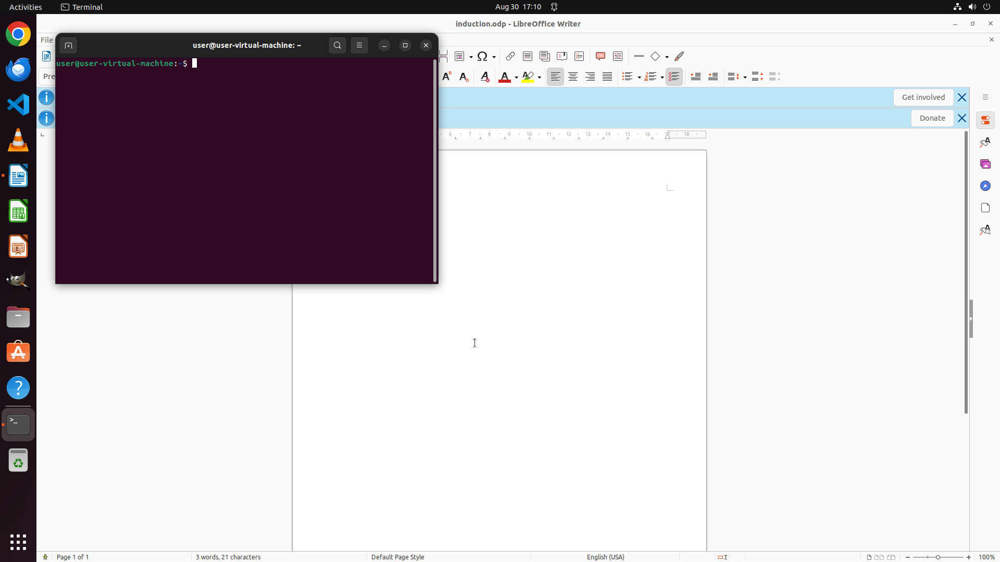
step 4 02:10:26
THINKINGThe terminal is open. The title bar now shows "induction.odp - LibreOffice Writer". Wait, the document title is "induction.odp" - that's an OpenDocument Presentation! But it's opened in LibreOffice Writer? That's odd. Actually the title says "induction.odp - LibreOffice Writer" which is strange. Perhaps it's actually a presentation file. Let me not overthink - the "deck" is likely induction.odp or there's a separate presentation. Let me search the file system first.
Let me find all relevant files: .odp, .pptx, .csv files.
ACTIONThe terminal is open. Let me search for the deck and CSV files.
THINKINGThe command hasn't executed output yet - it seems the newline got typed but the screenshot shows the command still on the line. Actually the prompt shows the command typed. Let me press Enter to run it.
EXECUTED (pyautogui in VM)pyautogui.press("return")
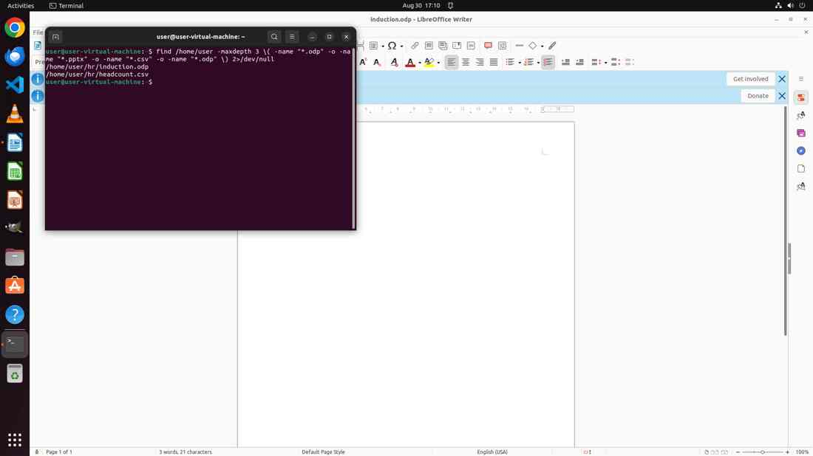
step 7 02:10:51
THINKINGFound the files:
- /home/user/hr/induction.odp (the deck)
- /home/user/hr/headcount.csv (the CSV)
They're both in /home/user/hr/ - "beside it" confirmed. The deck is an .odp (OpenDocument Presentation). Let me examine the CSV content first to understand the department headcounts, and inspect the current .odp to understand its structure.
Let me cat the CSV.
ACTIONFound both files in `/home/user/hr/`: the deck `induction.odp` and `headcount.csv`. Let me examine the CSV and the current deck contents.
EXECUTED (pyautogui in VM)pyautogui.typewrite("echo \"=== CSV ===\"; cat /home/user/hr/headcount.csv; echo \"=== ODP ===\"; ls -la /home/user/hr/")
step 8 02:11:00
THINKINGThe command is typed but the terminal window is small. The output may be below the visible area or not scrolled. Let me maximize the terminal window first to see output better, then run. Actually the command is on the line already. Let me press Enter and then maximize. Better: maximize the terminal first, then run the command so I can see full output. But the command is already typed on the prompt. Let me just press Enter, then maximize the window, then I can scroll to read.
Actually the terminal is small (about 480px wide, 300px tall). Let me maximize it by double-clicking the title bar or clicking the maximize button. But the command is typed. Let me first maximize by clicking the maximize button (the square at top right of terminal, at ~518,57), then run.
ACTIONLet me maximize the terminal for better readability, then run the command.
EXECUTED (pyautogui in VM)pyautogui.press("return")
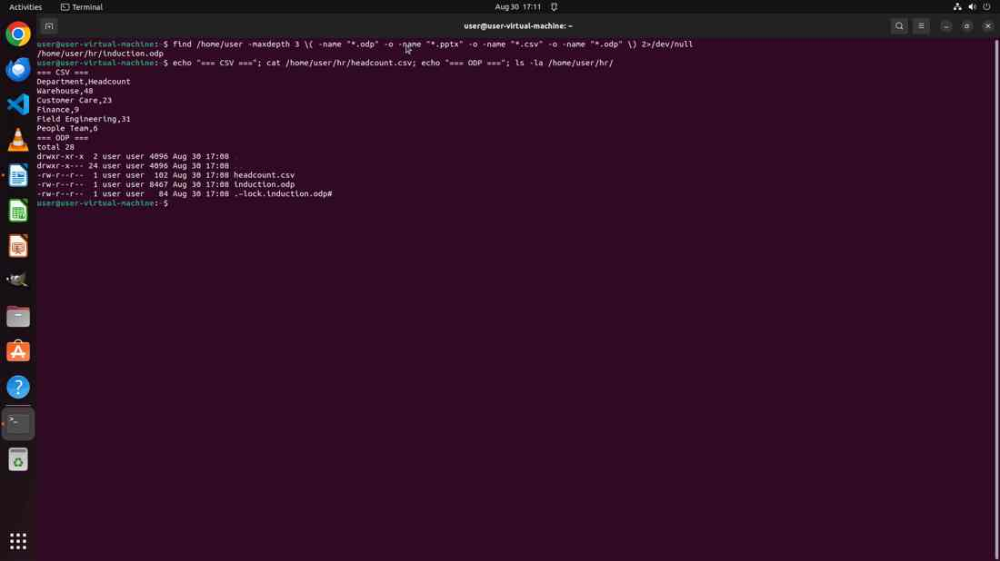
step 10 02:11:24
THINKINGNow I can read the CSV:
```
Department,Headcount
Warehouse,48
Customer Care,23
Finance,9
Field Engineering,31
People Team,6
```
Wait, there's a space in "Customer Care,23" and "Field Engineering,31". Let me re-read carefully:
- Warehouse,48
- Customer Care,23
- Finance,9
- Field Engineering,31
- People Team,6
So departments sorted by headcount descending:
1. Warehouse - 48
2. Field Engineering - 31
3. Customer Care - 23
4. Finance - 9
5. People Team - 6
Now I need to understand the current .odp deck structure. Let me extract it. An .odp is a zip file. Let me inspect the content.xml to see the existing slides. There's a .~lock file meaning it's currently open in LibreOffice (the Writer window - though it shows as "Writer" it's actually the odp opened).
Let me inspect the odp content.xml to understand the existing slide structure - the title slide and what's there currently.
The task: "one slide per department after the title slide, largest headcount first, each titled with the department and a body line reading exactly 'Headcount: N'." So I need:
- Slide 1: title slide (keep existing, "New Starter Induction")
- Slide 2: Warehouse / "Headcount: 48"
- Slide 3: Field Engineering / "Headcount: 31"
- Slide 4: Customer Care / "Headcount: 23"
- Slide 5: Finance / "Headcount: 9"
- Slide 6: People Team / "Headcount: 6"
Then save the odp in place, and create a PDF copy beside it (/home/user/hr/induction.pdf).
The best approach: work in LibreOffice Impress. But the file is open in "Writer" (odd). Let me first check the current deck structure via unzipping to understand it. Let me extract content.xml.
ACTIONI now have the data. The CSV has:
- Warehouse: 48
- Customer Care: 23
- Finance: 9
- Field Engineering: 31
- People Team: 6
Sorted largest first: Warehouse(48), Field Engineering(31), Customer Care(23), Finance(9), People Team(6). Let me inspect the current deck structure.
EXECUTED (pyautogui in VM)pyautogui.press("return")
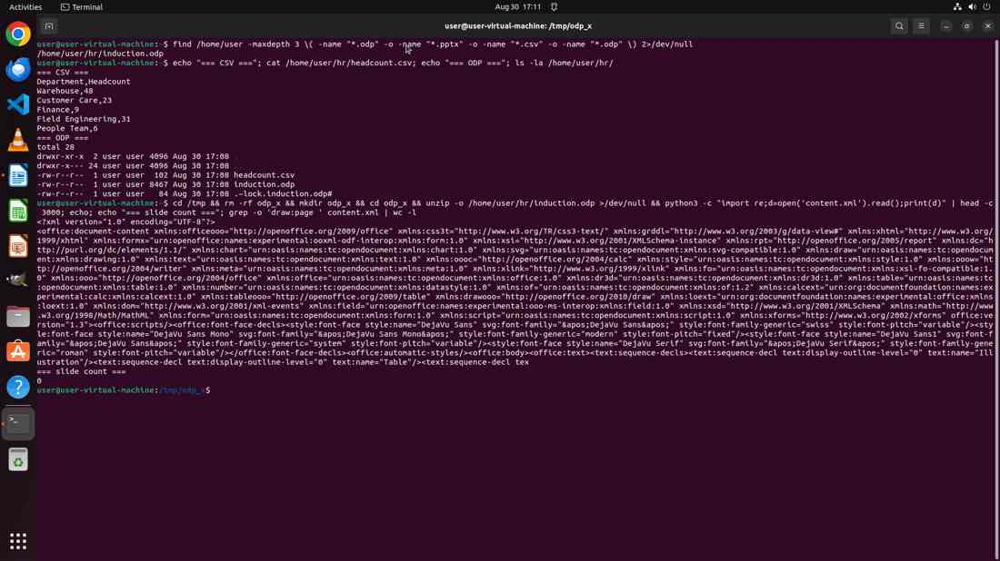
step 12 02:11:52
THINKINGInteresting! The slide count for 'draw:page ' is 0, and the content.xml is a Writer document (`<office:document-content ... office:writer`), not a presentation! The content.xml has "office:text" and "text:sequence-decl" - this is a Writer text document, not a presentation.
Wait - the file is named induction.odp but the content.xml shows it's actually a Writer document (the namespaces include office:writer). And the "draw:page" count is 0, confirming there are no presentation slides.
Hmm, but the file is .odp. Actually the extension says .odp but LibreOffice opened it in Writer. So this "deck" is currently a Writer document that just happens to have a .odp extension? Or it was created as a Writer doc saved with .odp extension.
Let me reconsider. The task says "this deck has to match the headcount CSV". A deck = presentation. The file is induction.odp. But its content.xml is a Writer text document with no slides. So currently the "deck" is essentially empty / just a title in a Writer-like document.
Wait, actually maybe the whole content.xml I printed was truncated (head -c 3000). Let me check the actual body. The draw:page count is 0 though, which is the key indicator - a real Impress presentation would have draw:page elements. Let me verify by searching for "draw:page" without trailing space, and "presentation" namespaces.
Actually the namespace list includes office:writer and there's NO office:presentation. So this file is a Writer document with an .odp extension. That's unusual but it's what we have.
Hmm, this changes my approach. The "deck" is a Writer document (induction.odp) currently containing just "New Starter Induction". The task wants me to make it "one slide per department after the title slide".
Given it's a Writer doc, "slides" don't naturally exist. But the task conceptually wants a presentation with a title slide + one slide per department.
The cleanest interpretation: I should make induction.odp a proper presentation (Impress) with:
- Slide 1: title "New Starter Induction" (title slide)
- Slides 2-6: each department, titled with department name, body "Headcount: N"
Since the current file is a Writer doc with .odp extension, the most reliable path is to build a proper Impress presentation. I should create it via LibreOffice Impress GUI.
But wait - the file is currently open in LibreOffice Writer (the window behind). If I create a new presentation and save it as induction.odp, that would replace the file. But the existing file is open and locked.
Let me reconsider whether it's really a Writer doc. Let me check more definitively - look for office:presentation vs office:text in content.xml, and check the mimetype file. Let me grep.
Actually, let me reconsider the whole approach. The most robust way given this is an .odp that's currently a Writer doc: I'll use LibreOffice Impress to create the presentation properly. But the requirement "Save it in place" means keep the filename induction.odp in /home/user/hr/. And the content must be a presentation with title slide + department slides.
However, there's ambiguity: is the evaluation checking for an ODP with slides, or does it accept any format? Given it's "a deck", it should be a real presentation. Let me build it in Impress.
Let me first confirm the document type more clearly. Let me grep for presentation/text and check mimetype.
ACTIONThe content.xml appears to be a Writer text document (no `draw:page` elements), despite the `.odp` extension. Let me confirm the document type and check the mimetype.
THINKINGThe command is typed but not yet executed (it's still on the prompt line, waiting). Wait, actually the previous Enter executed the earlier command. This new command is typed but I see it at the bottom but no output yet - it needs an Enter. Actually looking carefully, the last line shows the command typed. Let me press Enter.
EXECUTED (pyautogui in VM)pyautogui.press("return")
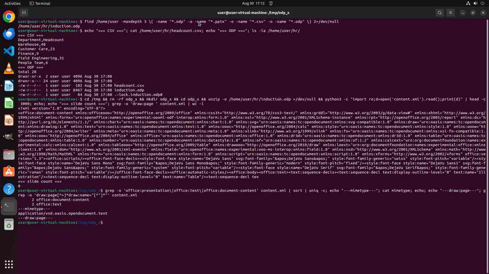
step 14 02:12:42
THINKINGNow confirmed:
- office:document-content: 2 (just the wrapper mentions)
- office:text: 2
- office:presentation: 0 (NOT a presentation!)
- mimetype: application/vnd.oasis.opendocument.text (it's a TEXT document!)
- draw:page: none
So `induction.odp` is actually a **Writer text document** (mimetype = opendocument.text) that has been given an `.odp` extension. The content is just the title "New Starter Induction".
The task wants a "deck" - a presentation - with a title slide and one slide per department. So I need to convert this into a proper presentation (Impress) with the correct slides, save it in place as induction.odp, and create a PDF beside it.
The cleanest, most reliable approach is to use LibreOffice Impress to build the presentation. But there's a subtlety: the file is currently a text document with an .odp extension, currently open in Writer (locked). I need to:
1. Close the Writer window (it's holding the file).
2. Create a new Impress presentation with the required slides.
3. Save it as /home/user/hr/induction.odp (Overwrite, keep ODF format).
4. Export PDF to /home/user/hr/induction.pdf.
Actually, I could also build the presentation via GUI in Impress and use "Save As" to the induction.odp path. That's the GUI-based approach which the guidelines prefer.
But wait - the existing file being a text doc with .odp extension is a trap/distractor. The important thing is the end state: induction.odp should be a presentation with the right slides. Let me create a proper presentation.
Let me plan the Impress work:
1. Close the current Writer document (the "induction.odp" open in Writer). Actually I can just open a new Impress document; but saving over the locked file may conflict. Better to close Writer first without saving.
Actually, since the file is a text doc, closing it without saving is fine - I'm going to replace it entirely.
Let me think about the most reliable method. I'll:
1. Close the Writer window (don't save).
2. Open LibreOffice Impress (new presentation).
3. Use the Outline view to quickly type all slides! The outline view is the fastest way:
- Line 1 (title slide title): "New Starter Induction"
- Then slide 2 title + bullet, etc.
In Outline view:
```
New Starter Induction
Warehouse
Headcount: 48
Field Engineering
Headcount: 31
Customer Care
Headcount: 23
Finance
Headcount: 9
People Team
Headcount: 6
```
This creates:
- Slide 1: title "New Starter Induction"
- Slide 2: title "Warehouse", body "Headcount: 48"
- etc.
This is exactly what's needed. The body line reads exactly "Headcount: N".
However, outline view in Impress: the title slide in default template has a title placeholder; the outline title becomes the slide title. The bullet becomes body text. Good.
One concern: the first line in outline is the title of slide 1. For a title slide, that's fine.
Let me go with the Outline approach via GUI. This is the cleanest GUI method.
Steps:
1. Switch to the LibreOffice Writer window, close the document (it's a text doc, discard changes). Actually I don't want to keep Writer open with that file. Let me close it.
Actually, simpler: I'll open Impress via the LibreOffice start center or from terminal with `soffice --impress`. But there's already a soffice instance running (Writer). I can just launch a new Impress window.
Let me reconsider: The cleanest is to close the Writer doc first so the .odp file isn't locked, then create the presentation and Save As over it.
Let me first close the Writer document. I'll switch to it. Actually, let me just do everything in Impress and at the end "Save As" to the path - LibreOffice will prompt to overwrite and may complain the file is open in the same instance. Since it's the same soffice instance, saving over an open doc in the same instance... it's a different document (Writer doc vs new Impress doc). Save As to an existing path that's open in another window - LibreOffice usually just overwrites after confirmation, but it might refuse. To be safe, close the Writer doc first.
Let me switch to Writer and close it without saving. I'll click on the LibreOffice Writer in taskbar / use Activities. Actually the Writer window is behind the terminal. Let me use the "New Starter Induction" - I recall the title bar said "induction.odp - LibreOffice Writer". Let me bring it up.
Let me minimize/switch. I'll use Activities to find the Writer window, or just Alt+Tab. Let me use the terminal to close soffice cleanly? No - that might lose things.
Plan:
1. Switch to Writer window (Alt+Tab or click).
2. Close it (Ctrl+W / File > Close), discard changes (it's a text doc, we're replacing it).
3. Then open Impress: I can use the terminal: `soffice --impress &` — but soffice is already running, this will open a new Impress window in the same instance. Good.
Actually even simpler and more robust: do the whole thing via the GUI in Impress. Let me proceed.
Let me first bring up the Writer window to close it. I'll use Activities overview. Or click the taskbar. In GNOME, there's no persistent taskbar; the "Activities" top-left shows windows. Let me click Activities.
Actually, let me just click on the LibreOffice Writer icon in the left dock (the one at ~22,224 which looks like a document). Hmm, that opens a new Writer doc. Better to use Activities to switch to the existing window.
Let me use the keyboard: Alt+Tab to cycle windows. Let me press Alt+Tab. But I'm in terminal. Let me do it.
Actually, to reduce risk, let me handle the file operations mostly through the GUI Impress, and handle closing Writer via GUI too.
Let me switch to the Writer window. I'll click Activities (top-left).
ACTIONConfirmed: `induction.odp` is actually a Writer **text document** (mimetype `opendocument.text`), not a presentation — it contains only the title "New Starter Induction". The task needs a proper deck, so I'll build it in Impress. First, let me close the open Writer document so the file isn't locked. Let me switch to it via Activities.
THINKINGI see the Activities overview with the Writer window (left) and Terminal (right). Let me click the Writer window to bring it into focus so I can close it.
ACTIONI can see the Writer window in the overview. Let me click it to bring it to focus.
EXECUTED (pyautogui in VM)pyautogui.click(605, 562)
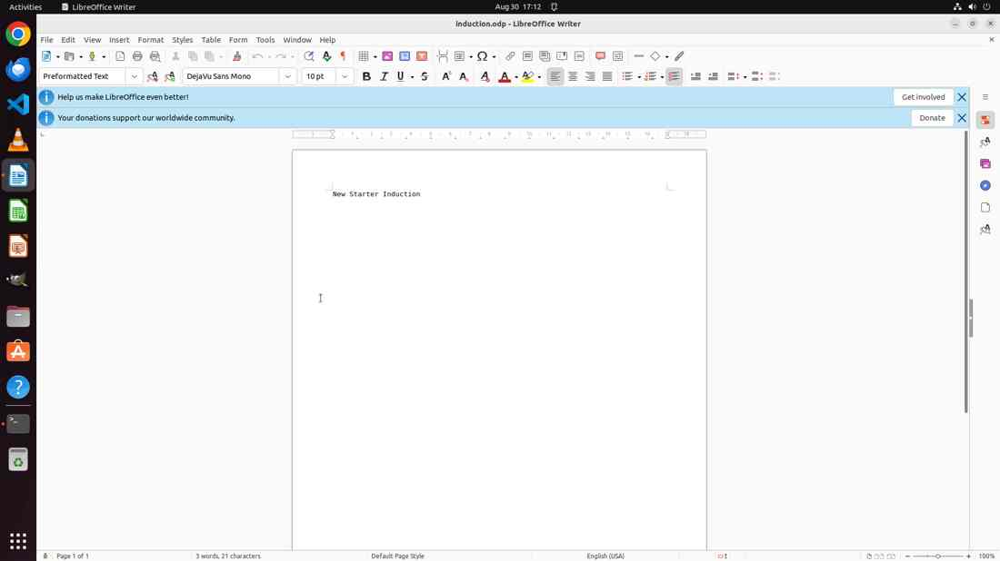
step 16 02:13:08
THINKINGThe Writer window is now focused, showing "induction.odp - LibreOffice Writer" with the title text "New Starter Induction".
Now I need to close this document without saving (I'll replace the file with a proper presentation). Let me close via File > Close or Ctrl+W. Since there may be no unsaved changes (the doc was just opened), it may close directly. But to be safe, if a dialog appears asking to save, I'll click "Don't Save".
Actually, I want to keep the LibreOffice instance running but close this Writer document, so I can then open Impress. Let me use Ctrl+W.
Wait - a consideration: Instead of closing and creating fresh, I could keep things simple. But the file is a text doc; I need to replace it with a presentation. The most reliable: close this doc, create new Impress presentation, fill outline, Save As to /home/user/hr/induction.odp (Overwrite), then Export PDF.
Let me close this document now.
ACTIONThe Writer document is focused. I'll close it without saving (I'll replace the file with a proper presentation).
EXECUTED (pyautogui in VM)pyautogui.hotkey("ctrl", "w")
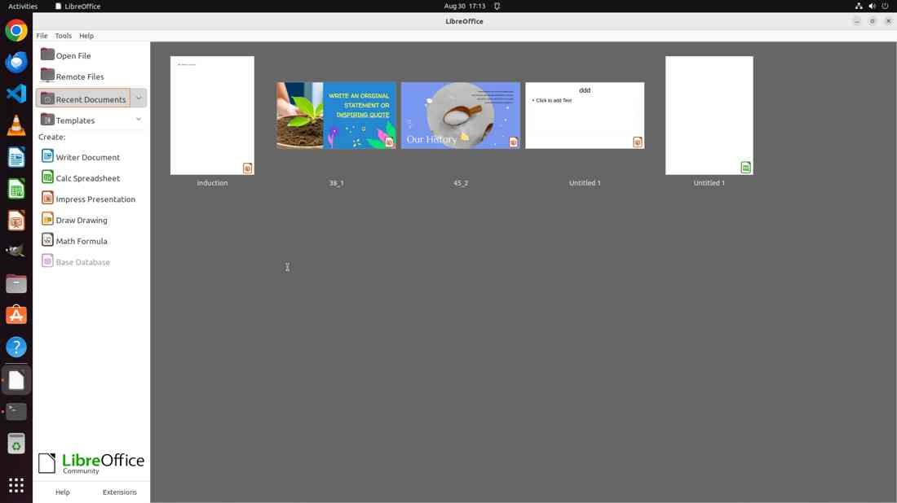
step 17 02:13:20
THINKINGThe document closed without a save dialog (it was unmodified) and now the LibreOffice Start Center is showing. The "induction" file is in recent documents (a Writer doc - shown with the Writer icon).
Now I'll create a new Impress Presentation. Click "Impress Presentation".
ACTIONThe document closed and the Start Center is showing. Now let me create a new Impress Presentation.
EXECUTED (pyautogui in VM)pyautogui.click(205, 427)
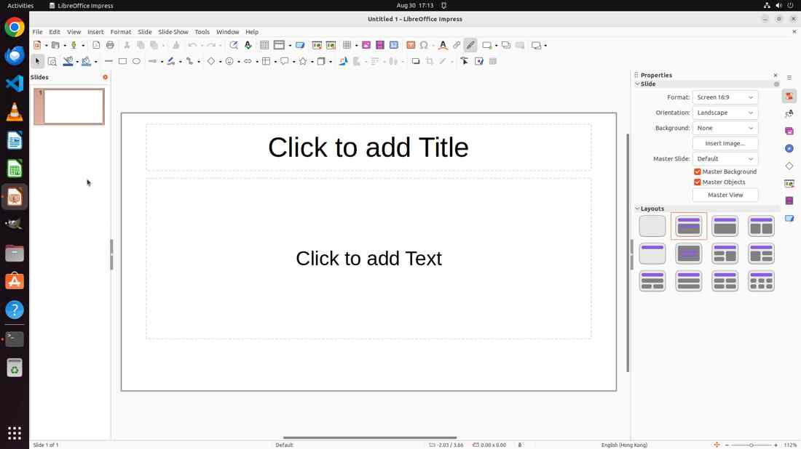
step 18 02:13:39
THINKINGA new Impress presentation is open with one slide (title + content layout). Now the fastest way to enter all slides is via the Outline view. Let me switch to View > Outline.
In Outline view, I type:
- Line 1 (no indent): "New Starter Induction" → Slide 1 title
- Enter, "Warehouse" → Slide 2 title
- Enter, Tab → indented, "Headcount: 48" → Slide 2 body
- Enter, Shift+Tab → back to title level, "Field Engineering" → Slide 3 title
- Enter, Tab, "Headcount: 31"
- Enter, Shift+Tab, "Customer Care"
- Enter, Tab, "Headcount: 23"
- Enter, Shift+Tab, "Finance"
- Enter, Tab, "Headcount: 9"
- Enter, Shift+Tab, "People Team"
- Enter, Tab, "Headcount: 6"
Wait, in Outline view, the first line is the title of slide 1. The current slide 1 has a "Click to add Text" body placeholder too. When I use outline, the body of slide 1 would only get text if I indent under the first title. I won't, so slide 1 body stays empty (that's fine - it's a title slide).
But there's a subtlety: the existing slide 1 already exists with the default layout (title + content). In outline view, that maps correctly.
However, I need to be careful about how the outline interprets the first title. Let me use View > Outline.
Let me click View menu.
ACTIONA new presentation is open. I'll use the Outline view to efficiently enter all slides. Let me switch to View > Outline.
EXECUTED (pyautogui in VM)pyautogui.click(205, 125)
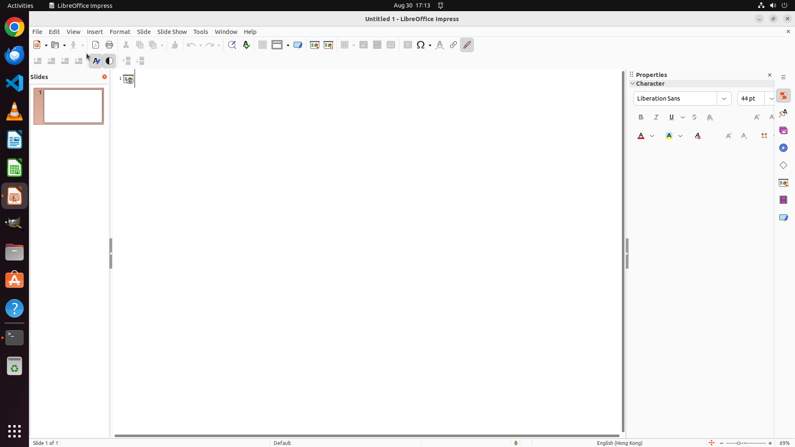
step 20 02:14:24
THINKINGI'm now in Outline view. There's a cursor at the top (slide 1, empty title). I'll click into the outline area first to ensure focus, then type. The cursor appears to already be at the top-left outline area (I see a text cursor after the "1" slide marker icon).
Now I'll type the outline. I need to use Tab to indent (body level) and Shift+Tab to dedent (title level).
Let me type carefully. The `type` action types literal text. For indentation I need to press Tab and Shift+Tab keys. I'll break this into steps:
1. Type "New Starter Induction"
2. Enter
3. Type "Warehouse"
4. Enter, Tab
5. Type "Headcount: 48"
6. Enter, Shift+Tab
7. Type "Field Engineering"
8. Enter, Tab
9. Type "Headcount: 31"
10. Enter, Shift+Tab
11. Type "Customer Care"
12. Enter, Tab
13. Type "Headcount: 23"
14. Enter, Shift+Tab
15. Type "Finance"
16. Enter, Tab
17. Type "Headcount: 9"
18. Enter, Shift+Tab
19. Type "People Team"
20. Enter, Tab
21. Type "Headcount: 6"
I can batch these with key and type actions. But I need to be careful: In LibreOffice outline, pressing Tab at the start of a line demotes (indents), and Shift+Tab promotes. After typing "Headcount: 48" and pressing Enter, a new line is created at the same level (body level, indented). Then Shift+Tab promotes it to title level. Then I type the next title. Good.
However, there's a risk: pressing Enter after a title line creates a new line at title level. Then Tab demotes it to body. Good.
One concern: the `type` action with newlines - I could include \n in the type text but Tab handling within type text is tricky (Tab char in type might work to insert a tab, but in outline it would demote - actually the type action sends literal characters; a Tab character would be interpreted by the app as demote). To be safe, I'll use explicit key presses for Enter (Return), Tab, and Shift+Tab, and type actions for the text.
Let me click into the outline area first to make sure the cursor is active there. The cursor is already there (I see a text caret). Let me click at the top-left of the outline text area (~215, 128) to be safe.
Actually the caret is already at the title of slide 1. Let me just start typing. But to be safe, let me click in the outline text area first.
Let me batch: click, then type title, then Return, type Warehouse, Return, Tab, type Headcount: 48, Return, Shift+Tab, etc.
I'll do it in one big batch.
ACTIONI'm in Outline view with the cursor ready. I'll click into the outline area and type all slides, using Tab to indent body lines and Shift+Tab to return to title level.
EXECUTED (pyautogui in VM)pyautogui.click(449, 191)
step 21 02:14:44
THINKINGThe click landed in the outline area but I'm not 100% sure the cursor is at line 1 (the caret moved to where I clicked, which is on line 1 area). Let me click right next to the "1" marker / first line to place cursor at the very beginning. Actually, safer to click at the far left of the first line, at ~210, 128. Let me just click there precisely, then type.
Actually, to be safest, let me press Ctrl+Home to move to the very beginning of the outline, ensuring I'm at slide 1 title line start. Then type.
Let me batch: Ctrl+Home, then type the full outline with explicit key presses for newlines and indentation.
Sequence:
- key: ctrl+Home
- type: "New Starter Induction"
- key: Return
- type: "Warehouse"
- key: Return
- key: Tab
- type: "Headcount: 48"
- key: Return
- key: shift+Tab
- type: "Field Engineering"
- key: Return
- key: Tab
- type: "Headcount: 31"
- key: Return
- key: shift+Tab
- type: "Customer Care"
- key: Return
- key: Tab
- type: "Headcount: 23"
- key: Return
- key: shift+Tab
- type: "Finance"
- key: Return
- key: Tab
- type: "Headcount: 9"
- key: Return
- key: shift+Tab
- type: "People Team"
- key: Return
- key: Tab
- type: "Headcount: 6"
This is a large batch but predictable. Let me do it.
ACTIONI'll move to the very start and type the full outline: title, then each department title with an indented "Headcount: N" body line.
EXECUTED (pyautogui in VM)pyautogui.hotkey("ctrl", "home")
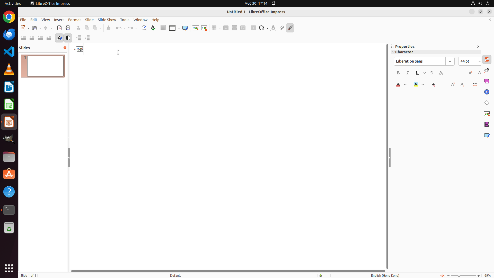
step 22 02:14:56
THINKINGThe cursor is now at the very start (line 1, next to the "1" slide marker). Now I'll type the full outline. Let me batch all the type and key actions.
ACTIONNow I'll type the entire outline in one batch.
TOOL CALL<tool_call>
<function=computer_use>
<parameter=action>
type
</parameter>
<parameter=text>
New Starter Induction
</parameter>
</function>
</tool_call>
EXECUTED (pyautogui in VM)pyautogui.typewrite("New Starter Induction")
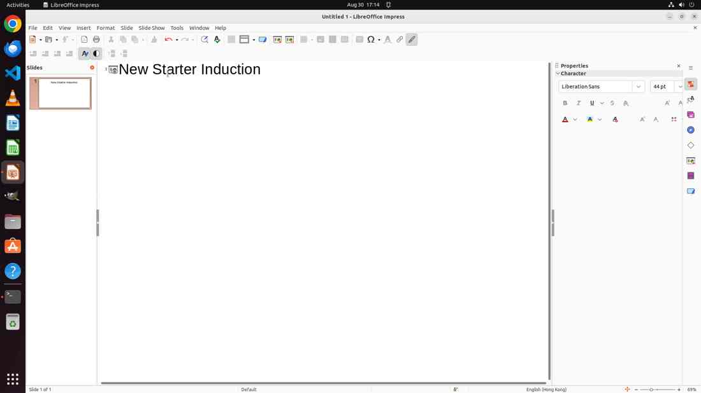
step 23 02:15:05
THINKINGThe title "New Starter Induction" is typed on slide 1, and the slide thumbnail shows it. Now I'll continue with the rest of the outline. I'll batch the sequence of Return, Tab/Shift+Tab, and type actions for all department slides.
ACTIONSlide 1 title is set. Now I'll add all department slides with their body lines in one batch.
EXECUTED (pyautogui in VM)pyautogui.press("return")
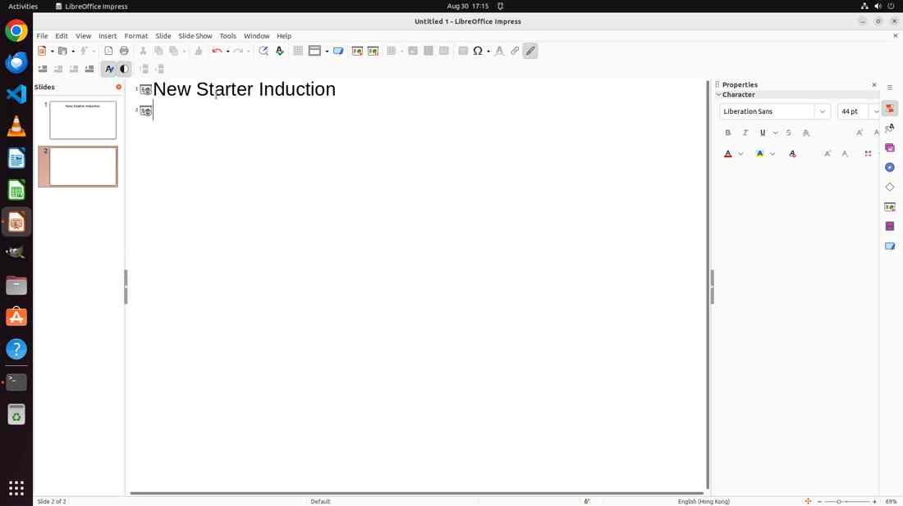
step 24 02:15:17
THINKINGA new slide 2 was created with a title-level line (cursor at slide 2 title). Now I'll type "Warehouse", then Return, Tab (to indent to body), type "Headcount: 48", then Return, Shift+Tab (back to title level for next slide), etc. Let me batch the whole remaining sequence.
ACTIONSlide 2 created at title level. Now I'll type the rest of the outline (Warehouse and its body, then the remaining departments) in a single batch.
EXECUTED (pyautogui in VM)pyautogui.typewrite("Warehouse")
step 25 02:15:28
THINKING"Warehouse" is now slide 2's title. Now I'll press Return then Tab to create an indented body line and type "Headcount: 48". Then continue. Let me batch: Return, Tab, type "Headcount: 48". Then Return, Shift+Tab, type "Field Engineering". Then Return, Tab, type "Headcount: 31". Then Return, Shift+Tab, type "Customer Care". Then Return, Tab, type "Headcount: 23". Then Return, Shift+Tab, type "Finance". Then Return, Tab, type "Headcount: 9". Then Return, Shift+Tab, type "People Team". Then Return, Tab, type "Headcount: 6".
Let me batch all of this into one tool call.
EXECUTED (pyautogui in VM)pyautogui.press("return")
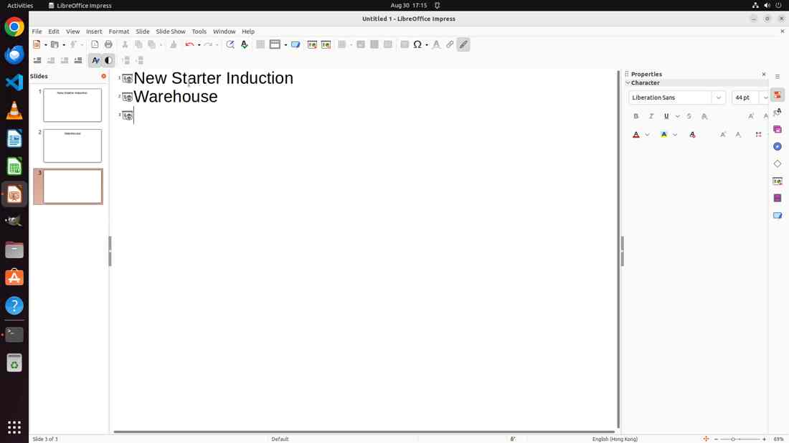
step 26 02:15:44
THINKINGPressing Return created slide 3 (a new title-level line). But I want the "Headcount: 48" to be a body line of slide 2 (Warehouse), not a new slide 3 title. So I now need to press Tab to demote this line to body level, which will attach it to slide 2's body. Let me press Tab, then type "Headcount: 48".
Then the pattern: Return (new line at same body level), Shift+Tab (promote to title → new slide), type next title, Return, Tab, type body, etc.
Let me now do Tab + type "Headcount: 48".
ACTIONNow I'll demote this line to a body bullet (attaching it to Warehouse) and type the headcount.
THINKINGThe line is now demoted to a body bullet (level 2, shown indented with a bullet, font size 32pt, slide count back to 2). Slide 3 merged back into slide 2 as body. Now I'll type "Headcount: 48". Then the rest of the sequence. Let me now batch: type "Headcount: 48", Return, Shift+Tab (promote to title → new slide 3), type "Field Engineering", Return, Tab, type "Headcount: 31", Return, Shift+Tab, type "Customer Care", Return, Tab, type "Headcount: 23", Return, Shift+Tab, type "Finance", Return, Tab, type "Headcount: 9", Return, Shift+Tab, type "People Team", Return, Tab, type "Headcount: 6".
This is a big batch but predictable. Let me do it.
ACTIONThe line is now a body bullet on the Warehouse slide. I'll type the headcount and continue through all remaining departments in one batch.
EXECUTED (pyautogui in VM)pyautogui.typewrite("Headcount: 48")
step 28 02:16:09
THINKING"Headcount: 48" is now a bullet under Warehouse. The pattern is confirmed working. Now I'll batch the remaining sequence for the other 4 departments:
- Return, Shift+Tab, type "Field Engineering"
- Return, Tab, type "Headcount: 31"
- Return, Shift+Tab, type "Customer Care"
- Return, Tab, type "Headcount: 23"
- Return, Shift+Tab, type "Finance"
- Return, Tab, type "Headcount: 9"
- Return, Shift+Tab, type "People Team"
- Return, Tab, type "Headcount: 6"
Let me batch all these.
ACTIONThe pattern works. Now I'll batch the remaining four departments.
EXECUTED (pyautogui in VM)pyautogui.press("return")
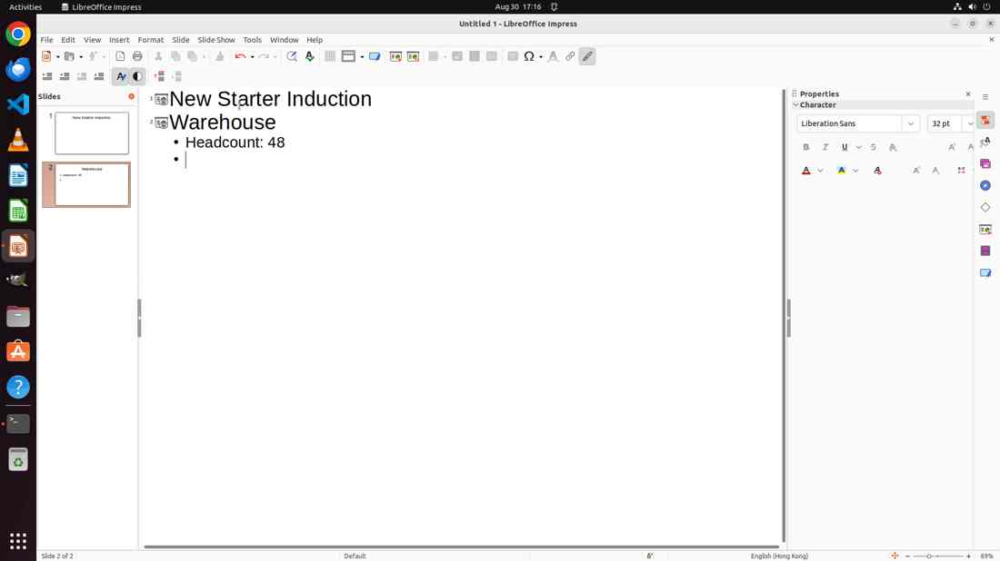
step 29 02:16:24
THINKINGA new empty body bullet appeared at level 2 under Warehouse. Now I need to promote it to title level (Shift+Tab) to create slide 3. Then type "Field Engineering". The pattern is confirmed. Now I'm confident the batch will work. Let me batch the entire rest:
- Shift+Tab
- type "Field Engineering"
- Return, Tab, type "Headcount: 31"
- Return, Shift+Tab, type "Customer Care"
- Return, Tab, type "Headcount: 23"
- Return, Shift+Tab, type "Finance"
- Return, Tab, type "Headcount: 9"
- Return, Shift+Tab, type "People Team"
- Return, Tab, type "Headcount: 6"
EXECUTED (pyautogui in VM)pyautogui.hotkey("shift", "tab")
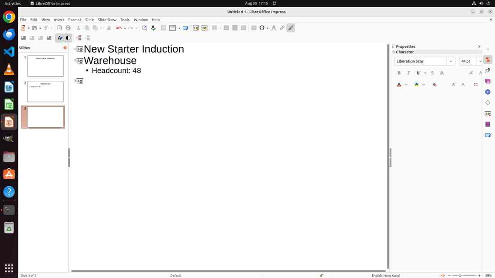
step 30 02:16:39
THINKINGSlide 3 created (title level, 44pt). The pattern is fully confirmed. Now I'll batch the entire remaining content. I'm confident in the behavior:
- type "Field Engineering"
- Return, Tab, type "Headcount: 31"
- Return, Shift+Tab, type "Customer Care"
- Return, Tab, type "Headcount: 23"
- Return, Shift+Tab, type "Finance"
- Return, Tab, type "Headcount: 9"
- Return, Shift+Tab, type "People Team"
- Return, Tab, type "Headcount: 6"
ACTIONSlide 3 title level is ready. I'll now batch the entire remaining outline.
TOOL CALL<tool_call>
<function=computer_use>
<parameter=action>
type
</parameter>
<parameter=text>
Field Engineering
</parameter>
</function>
</tool_call>
EXECUTED (pyautogui in VM)pyautogui.typewrite("Field Engineering")
step 31 02:16:54
THINKING"Field Engineering" is slide 3 title. Now I'll batch the remaining: Return, Tab, type "Headcount: 31", Return, Shift+Tab, type "Customer Care", Return, Tab, type "Headcount: 23", Return, Shift+Tab, type "Finance", Return, Tab, type "Headcount: 9", Return, Shift+Tab, type "People Team", Return, Tab, type "Headcount: 6".
EXECUTED (pyautogui in VM)pyautogui.press("return")
step 32 02:17:08
THINKINGNow at slide 4 title level. I'll now batch Tab + type "Headcount: 31", then the rest of the pattern for the remaining 3 departments. Since I've verified each primitive works, I'll do a larger batch now. Let me batch:
- Tab
- type "Headcount: 31"
- Return
- Shift+Tab
- type "Customer Care"
- Return
- Tab
- type "Headcount: 23"
- Return
- Shift+Tab
- type "Finance"
- Return
- Tab
- type "Headcount: 9"
- Return
- Shift+Tab
- type "People Team"
- Return
- Tab
- type "Headcount: 6"
ACTIONNow I'll batch the remaining content: Field Engineering's body and the last three departments.
THINKINGNow there's a body bullet under Field Engineering (slide 3). Now I'll type "Headcount: 31" and continue with the rest. Now I'm very confident. Let me batch a big sequence:
- type "Headcount: 31"
- Return
- Shift+Tab
- type "Customer Care"
- Return
- Tab
- type "Headcount: 23"
- Return
- Shift+Tab
- type "Finance"
- Return
- Tab
- type "Headcount: 9"
- Return
- Shift+Tab
- type "People Team"
- Return
- Tab
- type "Headcount: 6"
ACTIONNow I'll batch the headcount for Field Engineering plus all remaining departments in one sequence.
EXECUTED (pyautogui in VM)pyautogui.typewrite("Headcount: 31")
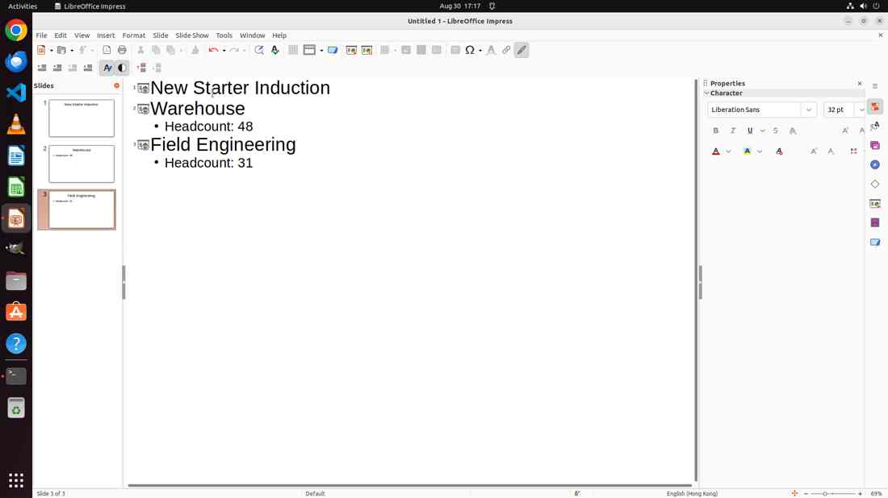
step 34 02:17:33
THINKINGNow slide 3 has "Headcount: 31". Now I'll add the last three departments. Let me batch: Return, Shift+Tab, type "Customer Care", Return, Tab, type "Headcount: 23", Return, Shift+Tab, type "Finance", Return, Tab, type "Headcount: 9", Return, Shift+Tab, type "People Team", Return, Tab, type "Headcount: 6".
ACTIONNow the final three departments in one batch.
EXECUTED (pyautogui in VM)pyautogui.hotkey("shift", "tab")
step 36 02:17:55
THINKINGSlide 4 title level. Now I'll type "Customer Care" and continue. I'm now going to batch the remaining three departments fully in one tool call to save round trips, since I'm confident in the behavior. Sequence:
- type "Customer Care"
- Return
- Tab
- type "Headcount: 23"
- Return
- Shift+Tab
- type "Finance"
- Return
- Tab
- type "Headcount: 9"
- Return
- Shift+Tab
- type "People Team"
- Return
- Tab
- type "Headcount: 6"
ACTIONSlide 4 title level is ready. I'll now batch the remaining three departments completely.
TOOL CALL<tool_call>
<function=computer_use>
<parameter=action>
type
</parameter>
<parameter=text>
Customer Care
</parameter>
</function>
</tool_call>
EXECUTED (pyautogui in VM)pyautogui.typewrite("Customer Care")
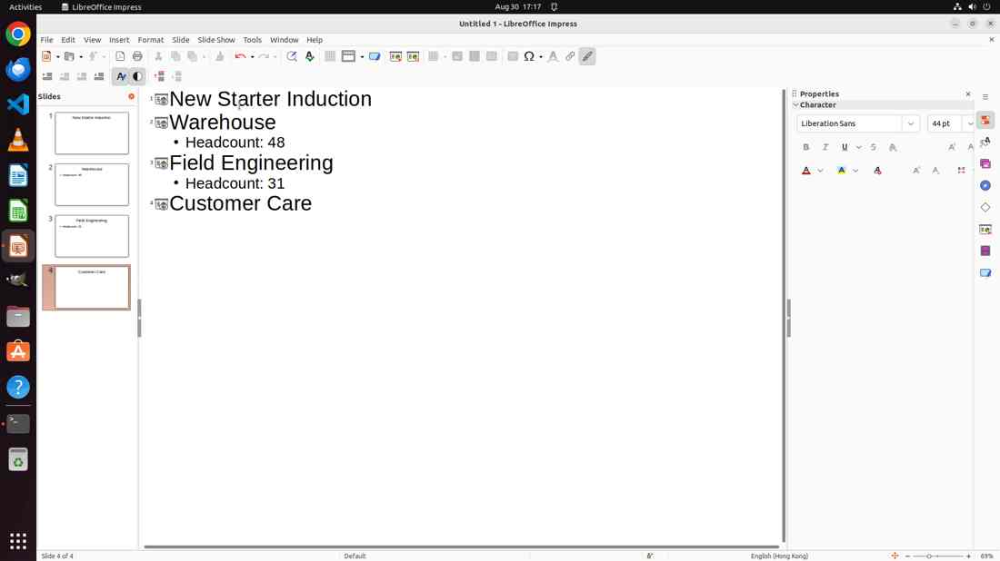
step 37 02:18:05
THINKINGNow I'll add the body line for Customer Care and the remaining two departments. I'll batch all remaining key/type actions:
- Return
- Tab
- type "Headcount: 23"
- Return
- Shift+Tab
- type "Finance"
- Return
- Tab
- type "Headcount: 9"
- Return
- Shift+Tab
- type "People Team"
- Return
- Tab
- type "Headcount: 6"
ACTIONNow I'll batch the body line for Customer Care plus Finance and People Team in a single sequence.
EXECUTED (pyautogui in VM)pyautogui.press("return")
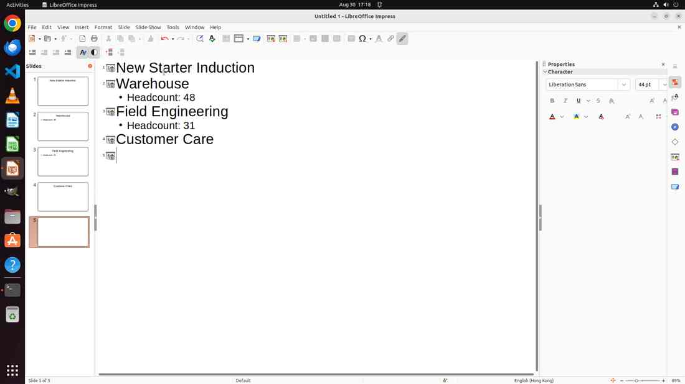
step 38 02:18:16
THINKINGI realize each key press creates a new line and the Return created slide 5 title (because I'm at title level after "Customer Care", Return creates a new title line = slide 5). Wait, that's wrong. After "Customer Care" (title level, slide 4), pressing Return creates a new title-level line = slide 5. But I want the body "Headcount: 23" for slide 4. So I need to press Tab to demote slide 5's title line to body level, attaching it to slide 4.
Currently it's at slide 5 title level (44pt). I'll press Tab to make it a body bullet on slide 4, then type "Headcount: 23". Then continue.
ACTIONNow I'll demote to a body bullet (attaching to Customer Care) and type its headcount, then continue with the last two departments.
THINKINGGood, now body bullet under Customer Care (32pt). Now I'll type "Headcount: 23" then finish Finance and People Team. Now I'll do a bigger batch. Sequence:
- type "Headcount: 23"
- Return
- Shift+Tab
- type "Finance"
- Return
- Tab
- type "Headcount: 9"
- Return
- Shift+Tab
- type "People Team"
- Return
- Tab
- type "Headcount: 6"
EXECUTED (pyautogui in VM)pyautogui.typewrite("Headcount: 23")
step 40 02:18:36
THINKINGCustomer Care now has "Headcount: 23". Now the last two departments. I'll batch: Return, Shift+Tab, type "Finance", Return, Tab, type "Headcount: 9", Return, Shift+Tab, type "People Team", Return, Tab, type "Headcount: 6".
ACTIONNow the final two departments, Finance and People Team.
EXECUTED (pyautogui in VM)pyautogui.press("return")
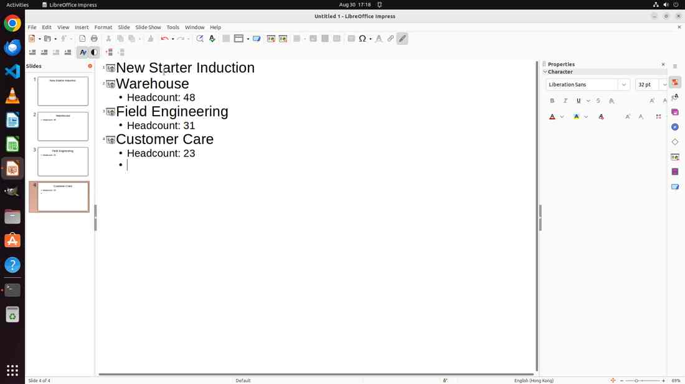
step 41 02:18:46
THINKINGNow there's a body bullet at level 2 under Customer Care (slide 4). I need to promote it to title level to create slide 5 (Finance). Press Shift+Tab, then type "Finance", Return, Tab, type "Headcount: 9", Return, Shift+Tab, type "People Team", Return, Tab, type "Headcount: 6".
Let me batch these now — I'm confident.
EXECUTED (pyautogui in VM)pyautogui.hotkey("shift", "tab")
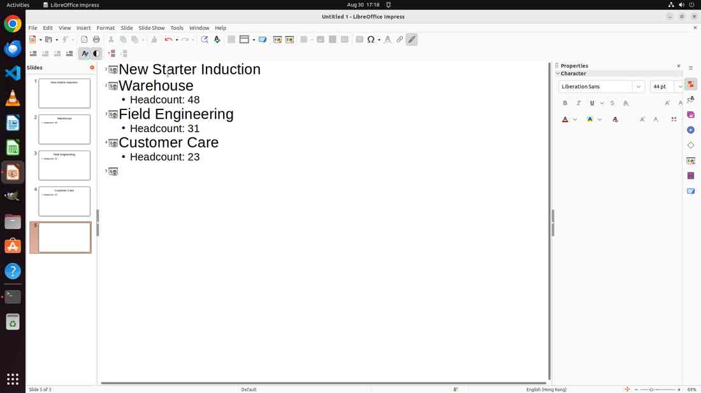
step 42 02:18:55
THINKINGSlide 5 title level (44pt). Now I'll type "Finance", then the body, then People Team. Let me batch:
- type "Finance"
- Return
- Tab
- type "Headcount: 9"
- Return
- Shift+Tab
- type "People Team"
- Return
- Tab
- type "Headcount: 6"
ACTIONNow I'll type Finance and its headcount, then People Team and its headcount, in one batch.
EXECUTED (pyautogui in VM)pyautogui.typewrite("Finance")
step 43 02:19:05
THINKING"Finance" is slide 5 title. Now I'll add its body line, then People Team. Sequence: Return, Tab, type "Headcount: 9", Return, Shift+Tab, type "People Team", Return, Tab, type "Headcount: 6". Let me do these steps. I'll batch the Return+Tab+type "Headcount: 9" first.
EXECUTED (pyautogui in VM)pyautogui.press("return")
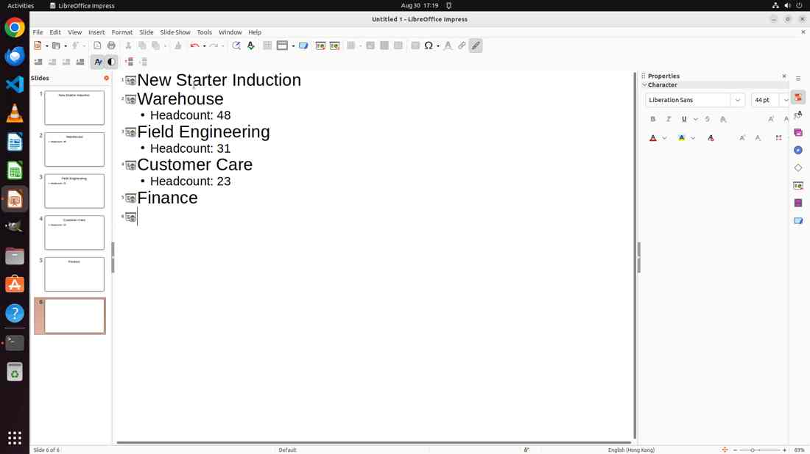
step 44 02:19:16
THINKINGNow there's slide 6 title-level line. I need to demote it to body level (Tab) to attach "Headcount: 9" to Finance (slide 5). Then type. Then Return, Shift+Tab, type "People Team", Return, Tab, type "Headcount: 6".
Let me do Tab, then type "Headcount: 9".
THINKINGBody bullet under Finance (32pt). Now type "Headcount: 9", then Return, Shift+Tab, "People Team", Return, Tab, "Headcount: 6". Let me type "Headcount: 9" first.
EXECUTED (pyautogui in VM)pyautogui.typewrite("Headcount: 9")
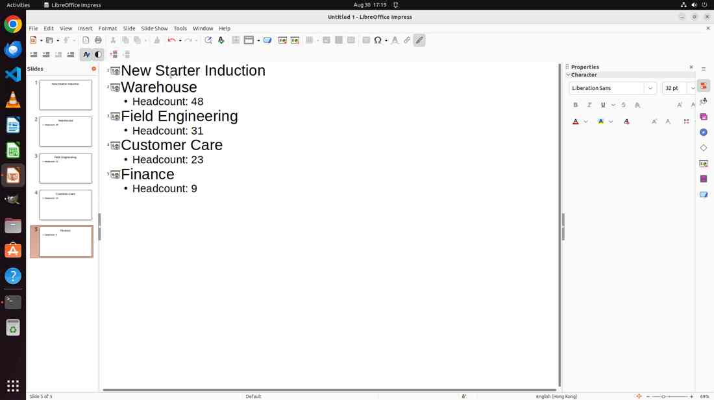
step 46 02:19:37
THINKINGFinance now has "Headcount: 9". Now the last one: People Team with "Headcount: 6". Sequence: Return, Shift+Tab (promote to title → slide 6), type "People Team", Return, Tab (demote to body), type "Headcount: 6".
Let me do Return first.
EXECUTED (pyautogui in VM)pyautogui.press("return")
step 47 02:19:48
THINKINGNow there's a body bullet under Finance. I need to promote to title level (Shift+Tab) to create slide 6 for "People Team", then type "People Team", then Return, Tab, type "Headcount: 6".
Let me do Shift+Tab then type "People Team".
EXECUTED (pyautogui in VM)pyautogui.press("return")
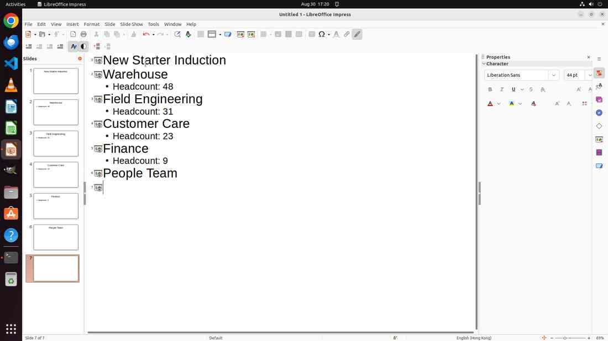
step 50 02:20:22
THINKINGNow slide 7 title-level line appeared. I need to demote it (Tab) to body level to attach "Headcount: 6" to People Team (slide 6), then type. Let me press Tab then type "Headcount: 6".